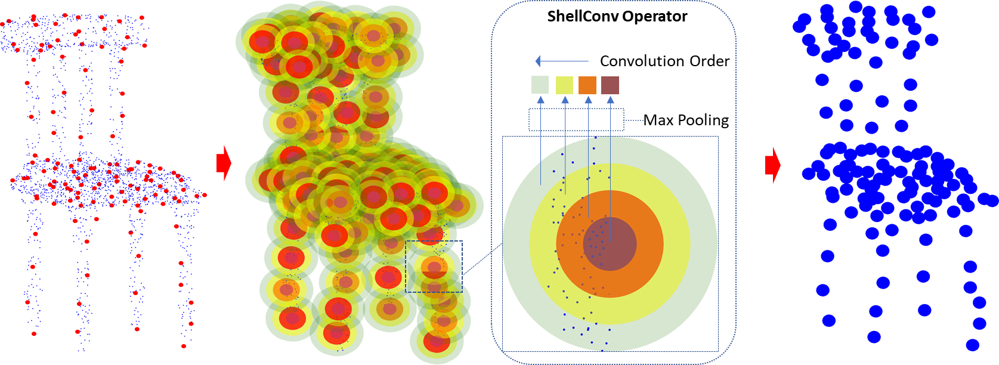

1Singapore University of Technology and Design
2The University of Tokyo
3Hong Kong University of Science and Technology
International Conference on Computer Vision (ICCV) 2019 (Oral)

Deep learning with 3D data has progressed significantly since the introduction of convolutional neural networks that can handle point order ambiguity in point cloud data. While being able to achieve good accuracies in various scene understanding tasks, previous methods often have low training speed and complex network architecture. In this paper, we address these problems by proposing an efficient end-to-end permutation invariant convolution for point cloud deep learning. Our simple yet effective convolution operator named ShellConv uses statistics from concentric spherical shells to define representative features and resolve the point order ambiguity, allowing traditional convolution to perform on such features. Based on ShellConv we further build an efficient neural network named ShellNet to directly consume the point clouds with larger receptive fields while maintaining less layers. We demonstrate the efficacy of ShellNet by producing state-of-the-art results on object classification, object part segmentation, and semantic scene segmentation while keeping the network very fast to train.
@inproceedings{zhang-shellnet-iccv19,
title = {ShellNet: Efficient Point Cloud Convolutional Neural Networks using Concentric Shells Statistics},
author = {Zhiyuan Zhang and Binh-Son Hua and Sai-Kit Yeung},
booktitle = {International Conference on Computer Vision (ICCV)},
year = {2019}
}
Acknowledgements
The authors acknowledge support from the SUTD Digital Manufacturing and Design Centre funded by the Singapore National Research Foundation, and an internal grant from HKUST (R9429).